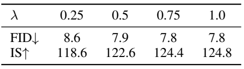

论文阅读三：生成的表示对齐（REPA）：训练扩散变换器比你想象的要容易
摘要
最近的研究表明，（生成）扩散模型中的去噪过程可以在模型内诱导有意义的（判别性的）表示，尽管这些表示的质量仍然落后于通过最近的自监督学习方法学习到的表示。我们认为，训练大规模扩散模型进行生成的一个主要瓶颈在于有效地学习这些表示。此外，通过结合高质量的外部视觉表示，而不是仅仅依靠扩散模型来独立学习，可以使训练更容易。我们通过引入一种名为REP表示对齐（REPA）的直接正则化来研究这一点，该正则化将去噪网络中噪声输入隐藏状态的投影与从外部预训练的视觉编码器获得的干净图像表示对齐。结果令人震惊：当应用于流行的扩散和基于流量的变压器（如DiT和SiT）时，我们的简单策略在训练效率和生成质量方面都有显著提高。例如，我们的方法可以将SiT训练速度提高17.5倍以上，在不到400K步内训练模型的性能（没有无分类器指导）与7M步的SiT-XL相匹配。在最终生成质量方面，我们的方法使用具有引导间隔的无分类器引导实现了FID=1.42的最新结果。论文地址
引言
基于去噪的生成模型，如扩散模型和基于流的模型，已成为生成高维视觉数据的可扩展方法。他们在具有挑战性的任务中取得了显著成功的结果，如零样本文本到图像或文本到视频生成。
最近的工作探索了扩散模型作为表征学习器的使用，并表明它们在隐藏状态下学习了判别特征，更好的扩散模型学习了更好的表征。事实上，这一观察结果与早期采用去噪分数匹配作为自监督学习方法的方法密切相关，该方法通过从损坏的数据 中重建x来隐式学习表示h作为去噪自动编码器 的隐藏状态。然而，重建任务可能不是学习良好表示的合适任务，因为它无法消除x中用于表示学习的不必要细节。
我们的方法。在本文中，我们发现训练扩散模型的主要挑战源于需要学习高质量的内部表示h。我们证明，在外部表示 的支持下，生成扩散模型的训练过程变得更加容易和有效。具体来说，我们提出了一种简单的正则化技术，该技术利用了自监督视觉表示 的最新进展，大大提高了扩散变换器的训练效率和生成质量。
我们首先对最近的扩散变换器和最先进的自监督视觉模型DINOv2进行了实证分析。与先前的研究类似，我们首先观察到预训练扩散模型确实学习了有意义的判别表示（如下图a中的线性探测结果所示）。然而，这些表示明显不如DINOv2产生的表示。接下来，我们发现扩散模型学习到的表示与DINOv2的表示之间的对齐仍然很弱（图b），我们通过测量它们的表示对齐来研究这一点。最后，我们观察到扩散模型和DINOv2之间的这种一致性随着训练时间的延长和模型的增大而持续提高。我们实证研究了DINOv2-g与经过7M迭代训练的原始SiT XL/2检查点之间的特征对齐。（a） 虽然SiT学习语义上有意义的表示，但与DINOv2相比仍存在显著差距。（b） 使用CKNNA，我们观察到SiT已经显示出与DINOv2的某种对齐，尽管其绝对值低于其他视觉编码器。（c） 通过更大的模型和更长的训练，对齐效果有所改善，但进展仍然缓慢且不足。
这些见解激励我们通过整合外部自我监督表征来增强生成模型。然而，当使用现成的自监督视觉编码器时（例如，通过微调编码器以完成生成任务），这种方法并不简单。第一个挑战是输入不匹配：扩散模型适用于有噪声的输入 ，而大多数自监督学习编码器都是在干净的图像x上训练的。这个问题在现代潜在扩散模型中更为明显，该模型从预训练的VAE编码器中获取压缩的潜在图像z=E（x）作为输入。此外，这些现成的视觉编码器不是为重建或生成等任务而设计的。为了克服这些技术障碍，我们使用正则化技术指导扩散模型的特征学习，该技术将预训练的自监督表示提取为扩散表示，提供了一种灵活的方法来集成高质量的表示。
具体来说，我们引入了REPresentation Alignment（REPA），这是一种基于最新扩散变换器架构的简单正则化技术。本质上，REPA将干净图像x的预训练自监督视觉表示 提取为噪声输入 的扩散变换器表示h。这种正则化减少了表示h（下图a）中的语义差距，并使其与目标自监督表示（图b）更好地对齐。值得注意的是，这种增强的对准显著提高了扩散transformer的生成性能（图c）。有趣的是，使用REPA，我们观察到只对齐前几个transformer块就可以实现足够的表示对齐。这反过来又允许扩散transformer的后续层基于对齐的表示专注于捕获高频细节，从而进一步提高了生成性能。
（a） 我们的方法REPA显著减少了扩散transformer和DINOv2之间的“语义差距”，正如ImageNet分类的线性探测结果所证明的那样。（b） 使用REPA，即使在几层（例如8层）之后，扩散transformer和DINOv2之间的对准也会大大改善。（c） 值得注意的是，通过改进对齐，我们可以推动SiT模型的生成表示包络：在相同的训练迭代次数内，它可以提供更好的生成质量和更强的线性探测结果。
基于我们的分析，我们进行了系统级比较，通过将其应用于最近的两个扩散transformer来证明我们的方案的有效性：DiTs和SiTs。对于SiT训练，我们表明该模型在类条件ImageNet（生成上仅使用400K训练迭代（没有无分类器引导）就实现了FID=7.9，比普通SiT快17.5倍。此外，在无分类器制导的情况下，我们的方案最终将FID从2.06提高到1.80，并在制导间隔内实现了FID=1.42的最新结果。
我们在下面强调了本文的主要贡献：
- 我们假设学习扩散变压器中的高质量表示对于提高其发电性能至关重要。•
- 我们引入了REPA，这是一种简单的正则化方法，用于将扩散变换器表示与强自监督视觉表示对齐。
- 我们的框架提高了扩散变换器的生成性能，例如，对于SiTs，我们实现了17.5倍的SiTs训练速度，并提高了ImageNet生成的FID分数。
预备知识
我们通过随机插值的统一视角简要概述了基于流动和扩散的模型。请参阅附录a中的更详细解释。
REPA：表示对齐的正则化
概述
设p（x）是数据x∈x的未知目标分布。我们的目标是通过使用从p（x）中提取的数据集的模型分布来近似p（x。为了降低计算成本，我们采用了最近流行的潜在扩散（Rombach等人，2022）。这涉及学习潜在分布p（z），其定义为压缩潜在变量z=E（x）的分布，其中E是来自预训练自动编码器的编码器（例如KL-VAE；Rombach等人，2022），x为pdata（x）。
我们的目标是通过使用速度预测等目标训练扩散模型vθ（zt，t）来学习这种分布，如第2节所述。在这里，我们重新审视了自监督表示学习背景下的去噪分数匹配（Bengio等人，2013）。从这个角度来看，人们可以将扩散模型vθ（zt，t）视为两个函数gθ◦fθ的组合，其中编码器fθ：Z→H，fθ（zt）=ht，解码器gθ：H→Z，gθ（ht）=vt，其中编码器gθ隐式学习重建目标vt的表示ht。
然而，通过产生输入空间的预测（例如生成像素）来学习良好的表示可能具有挑战性，因为模型通常无法消除不必要的细节，而这对于开发强大的表示至关重要（LeCun，2022；Assran等人，2023）。我们认为，大规模扩散模型生成训练的一个关键瓶颈在于表示学习，这是当前扩散模型不足的领域。我们还假设，通过用高质量的外部视觉表示来指导模型，而不是仅仅依靠扩散模型来独立学习，可以使训练过程更容易。
为了应对这一挑战，我们引入了一种称为REPresentation Alignment（REPA）的简单正则化方法，该方法使用了最新的扩散变换器架构（Peebles&Xie，2023；Ma等人，2024a）（详见附录B）。简而言之，我们的正则化以一种简单有效的方式将预训练的自监督视觉表示提取为扩散变换器。这使得扩散模型能够利用这些语义丰富的外部表示进行生成，从而显著提高性能。
观察
为了更深入地研究这一点，我们首先研究了ImageNet（Deng等人，2009）上预训练SiT模型（Ma等人，2024a）的逐层行为，该模型使用线性插值和速度预测进行训练。特别是，我们专注于测量扩散变换器和最先进的自监督DINOv2模型之间的表示差距（Oquab等人，2024）。我们从三个角度来研究这一点：语义差距、特征对齐进展及其最终特征对齐。对于语义差距，我们将使用DINOv2特征的线性探测结果与经过7M迭代训练的SiT模型的结果进行了比较，遵循与Xiang等人（2023）相同的协议，该协议涉及对扩散变换器的全局合并隐藏状态进行线性探测。接下来，为了测量特征对齐，我们使用CKNNA（Huh等人，2024），这是一种与CKA相关的内核对齐度量（Kornblith等人，2019），但基于相互最近的邻居。这允许对不同表示之间的对齐进行定量评估。我们在图2中总结了结果，在附录C.1中总结了更多细节（例如，CKNNA的定义）。
扩散transformer与最先进的视觉编码器存在明显的语义差距。如图2a所示，我们观察到预训练扩散变换器的隐藏状态表示与先前的工作（Xiang等人，2023；Chen等人，2024c）一致，在第20层实现了相当高的线性探测峰值。然而，它的性能仍然远低于DINOv2，表明这两种表示之间存在很大的语义差距。此外，我们发现，在达到这一峰值后，线性探测性能迅速下降，这表明扩散transformer必须从仅仅专注于学习语义丰富的表示转向生成具有高频细节的图像。
扩散表示已经（微弱地）与其他视觉表示对齐。在图2b中，我们使用CKNNA报告了SiT和DINOv2之间的代表性比对。特别是，SiT模型表示已经显示出比MAE更好的对齐效果（He等人，2022），MAE也是一种基于掩模补丁重建的自监督学习方法。然而，绝对对齐得分仍然低于其他自监督学习方法之间观察到的得分（例如，MoCov3（Chen等人，2021）与DINOv2）。这些结果表明，虽然扩散变换器表示与自监督视觉表示表现出一定的一致性，但这种一致性仍然很弱。
通过更大的模型和扩展训练，对齐效果会得到改善。我们还测量了不同模型大小和训练迭代的CKNNA值。如图2c所示，我们观察到与更大模型和扩展训练的对齐情况有所改善。然而，即使经过7M迭代的广泛训练，绝对对准仍然很低，没有达到其他自监督视觉编码器（例如MoCov3和DINOv2）之间观察到的水平。
这些发现并非SiT模型所独有，也在其他基于去噪的生成变换器中得到了观察。例如，在图2中，我们使用在ImageNet上预训练的具有DDPM目标的DiT模型（Peebles&Xie，2023）进行了类似的分析（Ho等人，2020；Nichol&Dhariwal，2021）。详见附录C.2。
表示与自监督表示的对齐
REPA将模型隐藏状态的逐块投影与预训练的自监督视觉表示对齐。具体而言，我们使用干净的图像表示作为目标，并探索其影响。这种正则化的目标是让扩散变换器的隐藏状态从包含有用语义信息的噪声输入中预测噪声不变、干净的视觉表示。这为后续层重建目标提供了有意义的指导。
形式上，让f是一个预训练的编码器，并考虑一个干净的图像x∗。设y∗=f（x∗）∈RN×D为编码器输出，其中N、D>0分别为补丁数量和f的嵌入维数。REPA将hϕ（ht）∈RN×D与y∗对齐，其中h \981]（ht）是扩散变换器编码器输出ht=fθ（zt）通过可训练投影头h b的投影。在实践中，我们只是使用多层感知器（MLP）对hϕ进行参数化。
特别是，REPA通过最大化预训练表示y∗和隐藏状态ht之间的补丁相似性来实现对齐：
实验
我们通过广泛的实验验证了REPA的性能和所提出组件的效果。特别是，我们调查了以下问题：
- REPA能否显著改善扩散变压器培训？
- REPA在模型大小和表示质量方面是否可扩展？
- 扩散模型表示可以与各种视觉表示对齐吗？
设置
实施细节。除非另有说明，否则我们严格遵守DiT和SiT中的设置。具体来说，我们使用ImageNet，其中每个图像都被预处理到256×256的分辨率（表示为ImageNet 256×256），并遵循ADM的其他数据预处理协议。然后，使用稳定扩散VAE将每个图像编码为压缩向量 。对于模型配置，我们使用DiT和SiT论文中介绍的B/2、L/2和XL/2架构，这些架构处理补丁大小为2的输入（详见下表）。为了确保与DiTs和SiTs进行公平比较，我们在训练过程中始终使用256的批量。附录D中提供了其他实验细节，包括超参数设置和计算资源。
评估。我们使用50000个样本记录了Frechet起始距离（FID；Heusel等人，2017）、sFID（Nash等人，2021）、起始得分（IS；Salimans等人，2016）、精确度（Pre.）和召回率（Rec.）（Kynka¨anniemi¨等人，2019）。我们还包括第3.2节中讨论的线性探测结果（Acc.）和CKNNA（Huh等人，2024）。我们在附录E中提供了每个指标的更多详细信息。
采样器。遵循SiT，我们始终使用SDE Euler Maruyama采样器（用于wt=σt的SDE），并默认将函数求值次数（NFE）设置为250。
基线。我们使用几种最新的基于扩散的生成方法作为基线，每种方法都采用不同的输入和网络架构。具体而言，我们考虑了以下四种方法：（a）像素扩散：ADM（Dhariwal&Nichol，2021）、VDM++（Kingma&Gao，2024）、简单扩散（Hoogeboom等人，2023）、CDM（Ho等人，2022）、（b）U-Net的潜在扩散：LDM（Rombach等人，2022年）、d）变压器的潜在扩散：MaskDiT（Zheng等人，2024）、SD-DiT（Zhu等人，2024）、DiT（Peebles&Xie，2023）和SiT（Ma等人，2024a）。在这里，我们指的是包含跳过连接的Transformer+UNet混合模型，这些模型最初不用于纯Transformer架构。附录F提供了每种基线方法的详细说明。
全成分分析
我们回答了REPA是否会改善扩散transformer训练的问题。我们发现REPA在各种设计选择中始终提供了显著提高的生成性能，实现了比一般模型更好的FID得分。下面，我们详细分析了每个组成部分的影响。
目标表示。我们首先分析了使用不同预训练自监督编码器作为目标表示的效果。值得注意的是，这些编码器的质量与相应的对准扩散变压器的性能之间存在很强的相关性。当扩散变换器与提供更有语义意义的表示（即更好的线性探测结果）的预训练编码器对齐时，该模型不仅捕获了更好的语义，而且表现出增强的生成性能，这反映在线性探测的验证精度提高和FID分数降低上。
目标编码器尺寸。接下来，我们通过评估各种DINOv2模型（即DINOv2-B、-L、-g）来研究不同目标表示编码器大小的影响。我们观察到性能差异很小，我们假设这是由于所有DINOv2模型都是从DINOv2-g模型中提取出来的，因此具有相似的表示。
对齐深度。我们还研究了将REPA损耗附加到不同层的影响。我们发现，如线性探测结果所示，仅对训练中的前几层（例如8层）进行正则化就足够了。有趣的是，将正则化限制在前几层可以进一步提高生成性能（例如，将REPA添加到第6层或第8层可以获得最佳结果）。我们假设，这使得剩余的层能够专注于捕捉高频细节，建立在强大的表示之上。在未来的实验中，我们将REPA应用于前8层。
对齐目标。我们比较了两个简单的对齐训练目标：归一化温度标度交叉熵（NT-Xent；Chen等人，2020a）或负余弦相似性（cos.sim.）。根据经验，我们发现NT Xent在早期阶段（例如50-100K迭代）具有优势，但差距会随着时间的推移而缩小。因此，我们选择了cos。在未来的实验中也是。
可扩展性。最后，我们通过改变目标表示编码器和扩散变换器的模型大小来研究REPA的可扩展性。一般来说，如图5a所示，与更强的表示对齐可以提高生成结果和线性探测性能。此外，随着扩散变换器模型尺寸的增加，REPA的收敛速度变得更加显著。我们通过在图5b中绘制有和没有REPA的不同SiT模型的FID-50K来证明这一点：REPA在较大的模型中更快地达到相同的FID水平。最后，图5c强调了随着模型大小的变化，线性探测结果与FID得分之间的关系，同时将目标表示编码器固定为DINOv2-B。较大的模型在更长的训练时间内表现出更陡峭的性能改进（即生成和线性评估的增益更快）。
（a） 使用不同目标编码器的REPA的线性探测与FID图（400K迭代）。更强的编码器可以提高鉴别和生成性能。（b） 随着模型大小的增加，REPA相对于vanilla模型的相对改进变得越来越显著。（c） 使用固定目标编码器，较大的型号可以更快地达到更好的性能。在折线图中，结果标记为50K、100K、200K和400K。
系统级比较
基于分析，我们对最新最先进的扩散模型方法和使用REPA的扩散变换器进行了系统级比较。首先，我们比较了vanilla DiT或SiT模型与用REPA训练的相同模型之间的FID值。如表3所示，REPA在所有模型变体中都显示出一致和显著的改进。特别是，在SiTXL/2上，对齐表示导致400K迭代时的FID=7.9，这已经超过了7M迭代时普通SiT XL的FID。请注意，随着训练时间的延长，表现会继续提高；例如，对于SiT XL/2，FID在1M迭代时为6.4，在4M迭代时为5.9。我们还对图4中的生成结果进行了定性比较，其中我们在不同模型中使用了相同的初始噪声。用REPA训练的模型表现出更好的进展。
最后，我们对SiT XL/2与REPA和其他最近使用无分类器引导的扩散模型方法进行了定量比较（Ho&Salimans，2022）。我们的方法已经以7倍更少的迭代次数超越了原始的SiT XL/2，并且随着训练时间的延长，它得到了进一步的改进。在800个epoch时，配备REPA的SiT XL/2在无分类器制导尺度w=1.35下实现了1.80的FID，并在额外的无分类器制导调度和制导间隔下实现了1.42的最先进FID（Kynka¨anniemi等人，2024）。我们还提供了SiT XL/2与REPA的选定定性结果，如图6所示，更多示例见附录H。
消融研究
不同时间步长的表示差距。我们首先使用具有不同噪声尺度（即不同时间步长）的SiT模型的输出比较语义差距（通过线性探测结果测量），并使用干净的DINOv2-g表示比较最大CKNNA值。如图7所示，REPA在不同噪声水平上始终减小了表示间隙，如更好的线性探测结果和所有噪声尺度上更高的CKNNA值所示。
与不同的视觉编码器对齐。此外，我们将分析从第2节扩展到其他视觉编码器，不限于DINOv2型号。具体来说，我们使用REPA和MAE或MoCov3训练SiT-L/2模型。如图8所示，这些模型在相应的目标表示中显示出比vanilla模型更高的CKNNA值。这表明REPA在对齐各种视觉表示方面是有效的，不仅限于DINOv2。
λ的影响。我们还通过用0.25到1.0的不同系数训练400K的SiT XL/2模型并比较性能来检验正则化系数λ的影响。如表5所示，性能对值具有鲁棒性，在λ=0.5后非常饱和。

相关工作
我们在这里讨论了最相关的文献，并在附录I中提供了更多的讨论。
衔接扩散模型和表征学习。最近的许多工作试图利用或改进从扩散模型中学习到的表示（Fuest等人，2024）。首先，有混合模型方法：Yang等人（2022）和Deja等人（2023）试图训练一个能够进行分类和基于扩散生成的单一模型。此外，Tian等人（2024）介绍了一种能够进行分割和生成的混合模型。接下来，有几项工作分析和利用了扩散模型中的表示：Xiang等人（2023）和Mukhopadhyay等人（2021）观察到扩散模型的中间表示具有判别性质。此外，Repfusion（Yang&Wang，2023）和DreamTeacher（Li等人，2023b）提出了从扩散模型到学生模型的知识蒸馏方案，以执行各种下游任务，如分类和几个密集预测任务。最后，已经有一些尝试将扩散模型中的去噪改进为自监督学习：Abstreiter等人（2021）扩展了扩散目标，以获得更好的表示学习方案，Chen等人（2024c）解构了扩散模型，以改进基于去噪的表示学习。Hudson等人（2024）介绍了一种编码器，该编码器通过将扩散的输出作为紧凑的潜在向量来引导扩散，从而学习表示。Zaidi等人（2023）专注于分子域，提出了一种基于去噪的预训练方案。我们的工作也有一些相似之处，我们专注于最近的自我监督和扩散表示之间的对齐，以及它们如何影响生成。
具有外部表示的扩散模型。最近的几项研究探索了利用预训练的视觉编码器来提高扩散模型的效率和性能（Pernias等人，2024；Li等人，2024）。Wurstchen（¨Pernias等人，2024）介绍了一个两阶段文本到图像扩散模型框架：一个文本条件模型，首先从文本提示生成语义图，然后是另一个基于语义图合成图像的扩散模型。RCG（Li等人，2024）专注于无条件生成，其中紧凑的1D潜矢量由扩散模型产生，随后用作第二扩散模型图像生成的标签。我们的工作还利用预训练的表示来改进扩散模型，但我们改进了扩散模型，而不需要训练学习表示分布的额外扩散模型。特别是，我们通过提出一种正则化来训练单个扩散模型，该正则化将扩散表示与自监督视觉表示对齐。
结论
本文提出了REPA，这是一种改进扩散变换器的简单正则化方法。特别是，我们研究了扩散变换器表示是否可以与最近的自监督表示对齐，以及它是否可以提高扩散变换器的生成性能。我们发现REPA可以显著提高扩散变压器的发电性能，收敛速度更快。我们希望我们的工作能够促进未来许多可能的研究方向，包括统一判别和生成模型及其表示或理论分析，以了解这种对齐如何改善生成。